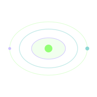

Fase 1
Ya sé construir con Django
Aprendes a crear aplicaciones pequeñas pero reales: login, CRUD, formularios y validaciones.
Mapa de misiones
De aprender Django a presentar proyectos reales. Entrega del portafolio en GitHub Pages: 19 de noviembre de 2026 a las 5:00 p. m. El 1 de diciembre es el día de la graduación, no la fecha de entrega.

Cada fase responde una pregunta profesional. No saltes evidencias: lo que construyes es lo que vas a mostrar.
Ya sé construir con Django
To-Do, Notes App y Calculadora Académica. Login, CRUD, formularios y validaciones.
Ya sé organizar información
Mini CRM y Blog con Admin. Filtrar, ordenar y publicar datos con criterio.
Ya puedo resolver problemas reales
HelpDesk y Dashboard. Estados, roles, métricas y gráficos.
Ya puedo presentarme profesionalmente
Portafolio en GitHub Pages, documentación y demo final.
Fase 1
Aprendes a crear aplicaciones pequeñas pero reales: login, CRUD, formularios y validaciones.
Fase 2
Practicas cómo guardar, filtrar, ordenar y publicar información como una aplicación profesional.
Fase 3
Construyes herramientas que parecen de entorno laboral: soporte, estados, métricas y dashboards.
Fase 4
Organizas evidencias, escribes documentación, grabas demos y publicas tu portafolio.
Guía por meses hasta la entrega del 19 de noviembre de 2026 a las 5:00 p. m. El 1 de diciembre es la graduación. No atrases la fecha de entrega.
| Etapa | Trabajo sugerido | Entregable |
|---|---|---|
| Julio | Base Django + To-Do / Login | Tutoriales 01–05 y proyecto 04 funcionando |
| Agosto | Notes App, Calculadora, Mini CRM | Proyectos 06–08 con capturas y README corto |
| Septiembre | Blog Admin + HelpDesk | Proyectos 09–10 listos para mostrar |
| Octubre | Dashboard + mejoras | Proyecto 11 y pulido de apps anteriores |
| Noviembre (inicio) | Portafolio, README, demos | Tutoriales 12–13 y sitio en GitHub Pages |
| 19 noviembre · 5:00 p. m. | Entrega de portafolios | Enlace público + README + demo listos y entregados |
| 1 diciembre | Graduación | Presentación / ceremonia (el portafolio ya debió entregarse) |
Filtra por tipo o tecnología. Cada card indica qué mostrar y a qué tutorial ir.
Tutorial 04
Fase 1 · Ya sé construir con Django · ~3 h
Aplicación de tareas con registro, login, CSRF y ownership por usuario.
Tutorial 06
Fase 1 · Ya sé construir con Django · ~2 clases
Notas privadas con categorías, favoritos, búsqueda y filtros por usuario.
Tutorial 07
Fase 1 · Ya sé construir con Django · ~1 clase
Calcula promedios, estados (Excelente a Reprobado) y recomendaciones automáticas.
Tutorial 08
Fase 2 · Ya sé organizar información · ~2 clases
Directorio con búsqueda, filtros por tipo, estados de seguimiento y estadísticas.
Tutorial 09
Fase 2 · Ya sé organizar información · ~3 clases
Blog público con slugs, categorías, borrador/publicado y panel Django Admin.
Tutorial 10
Fase 3 · Ya puedo resolver problemas reales · ~4 clases
Sistema de soporte con prioridades, estados y separación usuario / staff.
Tutorial 11
Fase 3 · Ya puedo resolver problemas reales · ~3–4 clases
Registro de gastos/ingresos, totales, balance y gráficos con Chart.js.
Tutorial 12
Fase 4 · Ya puedo presentarme profesionalmente · ~4 clases
Sitio estático personal con hero, skills, proyectos y enlace público.
Tutorial 13
Fase 4 · Ya puedo presentarme profesionalmente · ~2–3 clases
README profesional por proyecto, video demo y checklist de graduación.
Al cerrar la ruta puedes hablar de estas piezas con ejemplos reales en tu código.
No se pide perfección estética. Se pide evidencia de que entiendes y puedes explicar lo que construiste.
La app corre en local, sin errores bloqueantes, y muestra el flujo principal de punta a punta.
Modelos, vistas y templates están conectados. No hay “magia copiada” que no puedas explicar.
Donde hay usuarios, cada persona ve solo sus datos (o reglas staff claras). CSRF y login presentes cuando aplica.
Capturas, README, tecnologías y frase del problema resuelto. Listo para pegar en tu sitio final.
Para cada proyecto Django (y para el sitio final) documenta esto. Sin esto, el jurado solo ve código suelto.
Nombre del proyecto y una frase del problema que resuelve.
Tecnologías (Python, Django, Chart.js, etc.) usadas de verdad.
Capturas del flujo principal (login, listado, detalle, panel).
Enlace al repositorio (público o acceso compartido para evaluación).
README con cómo instalar, ejecutar y qué aprendiste.
Demo (video corto o recorrido en vivo) de la app funcionando.
Recuerda: GitHub Pages aloja tu portafolio estático. Los proyectos Django se ejecutan en tu computadora; el portafolio enseña capturas, repos y documentación.
Sí. Son la base. El To-Do (04) es también el primer proyecto de portafolio. El 05 (errores) se consulta siempre que algo falle.
No. Pages solo sirve HTML, CSS, JS e imágenes. Django corre en local. El portafolio en Pages muestra evidencia de tus apps, no el servidor de desarrollo.
Idealmente todos los de la ruta (04 y 06–11), más el sitio 12 y la documentación 13. Si el tiempo aprieta, prioriza To-Do, un mini-proyecto, un proyecto guiado, un profesional y el portafolio publicado. El 1 de diciembre es la graduación; para esa fecha el portafolio ya debió estar entregado.
Puedes, pero las fases están pensadas para subir complejidad. Si saltas HelpDesk sin haber hecho CRM/Blog, te costará más entender roles y filtros.
No. Se guarda en tu navegador con localStorage. Usa siempre el mismo dispositivo/navegador para ver tu avance.
Abre el Tutorial 05 · Errores comunes y lee también la sección de errores del tutorial del proyecto. Verifica migraciones, URLs, templates y CSRF antes de reescribir todo.